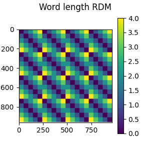

Note
Go to the end to download the full example code.
Construct a model RDM#
This example shows how to create RDMs from arbitrary data. A common use case for this is to construct a “model” RDM to RSA against the brain data. In this example, we will create a RDM based on the length of the words shown during an EEG experiment.
# Import required packages
import mne
import mne_rsa
MNE-Python contains a built-in data loader for the kiloword dataset, which is used
here as an example dataset. Since we only need the words shown during the experiment,
which are in the metadata, we can pass preload=False to prevent MNE-Python from
loading the EEG data, which is a nice speed gain.
data_path = mne.datasets.kiloword.data_path(verbose=True)
epochs = mne.read_epochs(data_path / "kword_metadata-epo.fif", preload=False)
# Show the metadata of 10 random epochs
print(epochs.metadata.sample(10))
Reading /home/runner/mne_data/MNE-kiloword-data/kword_metadata-epo.fif ...
Isotrak not found
Found the data of interest:
t = -100.00 ... 920.00 ms
0 CTF compensation matrices available
Adding metadata with 8 columns
960 matching events found
No baseline correction applied
0 projection items activated
WORD Concreteness ... ConsonantVowelProportion VisualComplexity
334 curry 5.3000 ... 0.600000 55.355831
404 chinese 4.6500 ... 0.571429 66.768864
53 green 4.3500 ... 0.600000 71.841236
926 pleasure 2.2000 ... 0.500000 66.833084
631 student 5.2500 ... 0.714286 65.089019
754 chin 5.8500 ... 0.750000 59.599664
867 reading 4.5500 ... 0.571429 68.851845
83 creek 5.8500 ... 0.600000 66.215098
706 stockade 5.0625 ... 0.625000 69.674303
841 debate 4.0500 ... 0.500000 75.445385
[10 rows x 8 columns]
Now we are ready to create the “model” RDM, which will encode the difference in length between the words shown during the experiment.
rdm = mne_rsa.compute_rdm(epochs.metadata.NumberOfLetters, metric="euclidean")
# Plot the RDM
fig = mne_rsa.plot_rdms(rdm, title="Word length RDM")
fig.set_size_inches(3, 3) # Make figure a little bigger to show axis properly

Total running time of the script: (0 minutes 0.230 seconds)